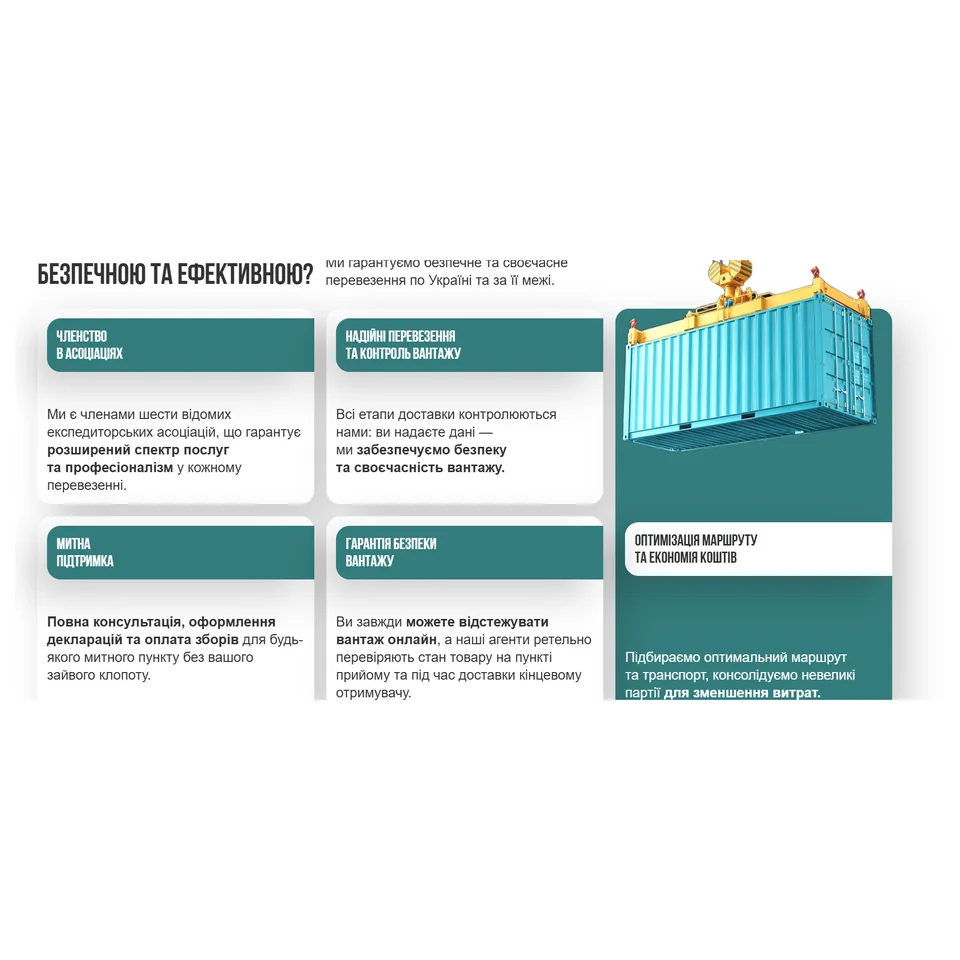
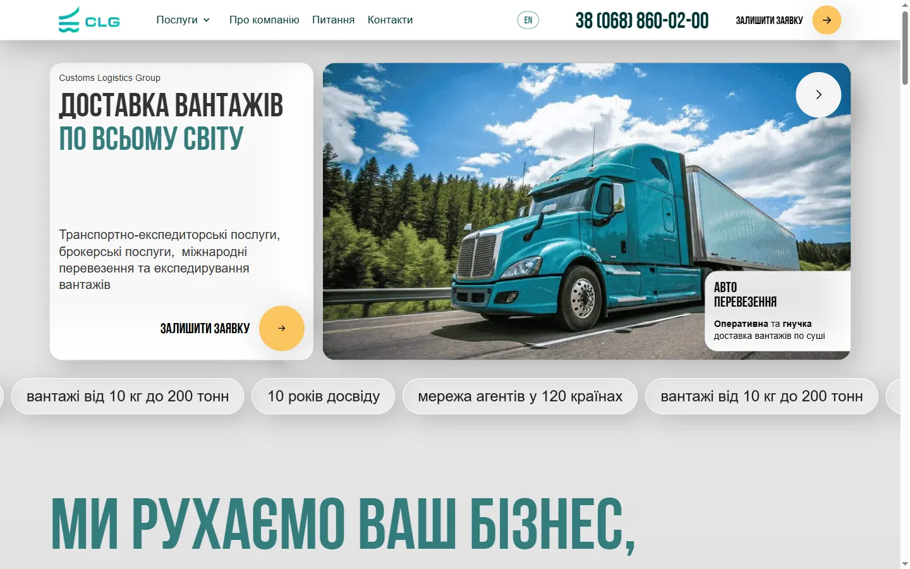
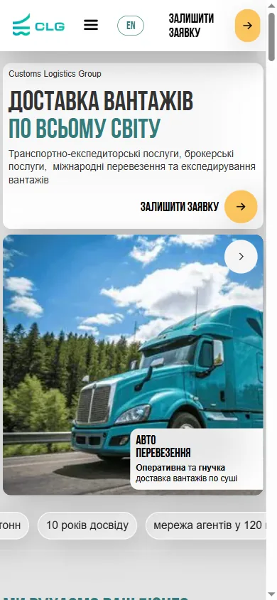
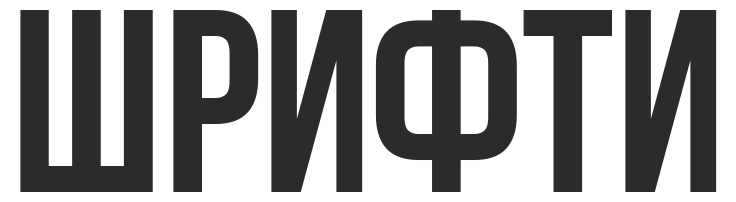
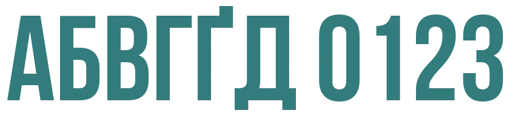
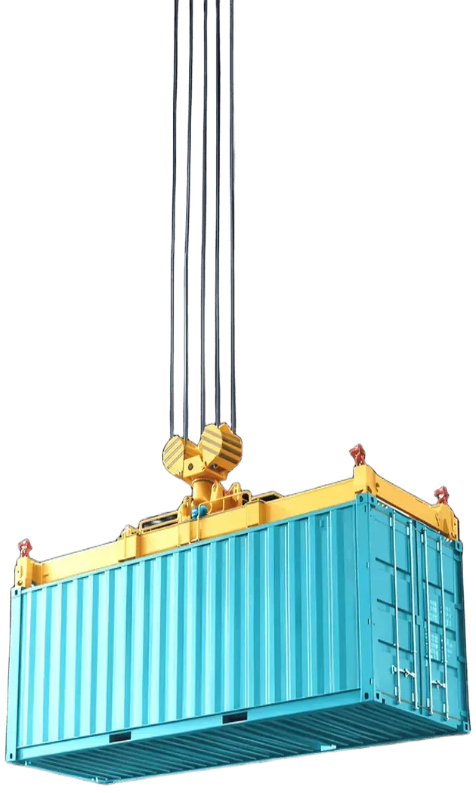

01Бенто-
сітка
сітка

Бенто-сітка
Сторінка розкладена на картки, кожна — одна думка: що це за послуга, фото, переваги, кнопка. Людина бачить усе одразу й читає лише потрібне, замість суцільного полотна тексту.

Кейс · 2026 · редизайн і стиль з нуля
Новий сайт і весь стиль логістичної компанії з нуля, а потім реклама, розсилка й презентація в тому ж стилі.
Стилю в компанії не було. Сайт — шаблонний конструктор: тексти суцільними полотнами, без структури, акцентів і анімації. Презентація — білий шаблон. Я перебудувала структуру сайту й придумала стиль, який потім переїхав у кожен канал.

Подано так само, як послуги на сайті CLG: наведіть на картку — вона розкриється.

Сторінка розкладена на картки, кожна — одна думка: що це за послуга, фото, переваги, кнопка. Людина бачить усе одразу й читає лише потрібне, замість суцільного полотна тексту.
Сайт на спокійному сірому, бірюза — головний колір, жовтий — лише для дій. Петроль і золото — для реклами й презентації, де потрібна глибина й преміальність.


Замість стокових фото, які є в кожного конкурента, — яскраві, соковиті кадри, згенеровані в нейромережі: бірюзовий літак, вантажівка, контейнеровоз, чисте небо. Вони тримають атмосферу й збігаються з кольорами бренду.
Google Lighthouse, головна сторінка. Продуктивність: 81–86 на телефоні, 88 на компʼютері.
Задача — сайт, який продає послуги бізнесу й показує сам процес перевезення. Я перебудувала структуру: кожна послуга отримала свою сторінку, текст — кроки, картки й відповіді на питання, а головне виділено так, щоб його було видно з першого погляду.

На сайті CLG рух — не прикраса: людина бачить сам процес перевезення ще до того, як прочитала текст. І все це — без втрати швидкості.
Подивитися на сайтіВласний код на Vercel: компанія не платить щомісяця за конструктор.
Англійська версія всіх сторінок і перемикач мови. Google знає, яка сторінка якою мовою.
Форма відправляє заявку просто на пошту компанії, без посередників.
Розмітка компанії й послуг для Google, FAQ-розмітка, карта сайту, превʼю посилань у месенджерах.
Файл llms.txt — довідка про компанію для ChatGPT
і Perplexity, щоб вони відповідали про CLG правильно.
Політика конфіденційності й умови використання. Прийменники не висять у кінці рядка.
33 сторіс для реклами — теж з нуля. Яскраві, щоб зупинити палець у стрічці: біль у заголовку, вигода й кнопка дії. І в тому ж стилі, що й сайт: після кліку людина одразу впізнає компанію.
Вісім листів — по одному на послугу. Усі зібрані за однією схемою: шапка з логотипом, привітання, картка з 3D-ілюстрацією, ціни й кнопка — тож лист CLG впізнають ще до того, як прочитали тему.
Замість білого шаблону — десять слайдів у стилі сайту: та сама бірюза, 3D і нейрофото.
Новий дизайн і структура замість шаблону: бенто-картки, 3D, анімації, дві мови. Головна відкривається за 1,4 с.
33 сторіс для таргету: біль у заголовку, вигода, кнопка — і той самий стиль, що на сайті.
Вісім листів за однією схемою — по одному на кожну послугу, з цінами й кнопкою.
Десять слайдів замість білого шаблону: компанія, послуги й контакти в одному стилі з сайтом.
Сайт, рекламу, розсилку й презентацію роблю в одному стилі — для бізнесу, якому треба продавати послугу, а не просто мати сайт.